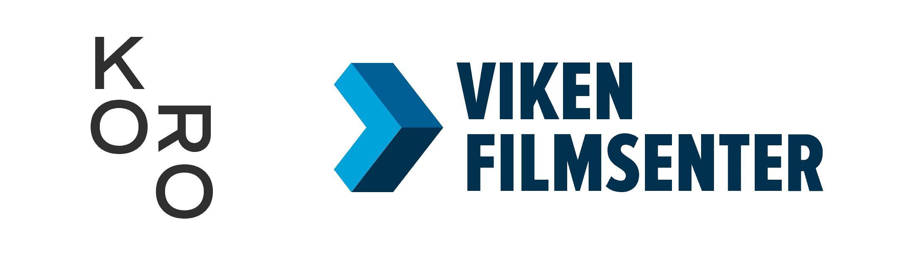

An application for slow exploration of time, ancient and new stories in space.
Lure of Slowness, Hydrological Rhythms is an interactive, audiovisual, augmented reality installation and multichannel sound piece. The work co-imagines interspecies relationships through the gelatinous lens and imagined temporalities of snails through trails, sculptures and positional audio that appear in real time uniquely for each visitor. The Virtual installation is housed in the application Lure of Slowness, available for download on the Apple and Android stores. The work is in dialogue with multi species theory emerging in the humanities and eco feminist discourse. The application and artwork is designed to Reflect on slowness and movement journeys of adaptation past, present, futures.
Elly Vadseth is an artist working with embodied research methods, choreography and new media. Her research interests include multispecies and decolonial epistemology, biological and neural ways of knowing, multispecies temporality, posthuman choreography and worldmaking. Boris Kourtoukov is an Oslo based artist that works within a wide range of the digital medium. From bending reclaimed technology, to making expressive wearables, to co-opting algorithms for individual introspection. A performative and process-oriented approach to matter and place plays an integral part in the artist’s transdisciplinary practice.
For more information about the artists visit Elly Vadseth & Boris Kourtoukov
On the Apple App Store or the Android Play Store
Supported kindly by:  © 2022 Elly Vadseth & Boris Kourtoukov